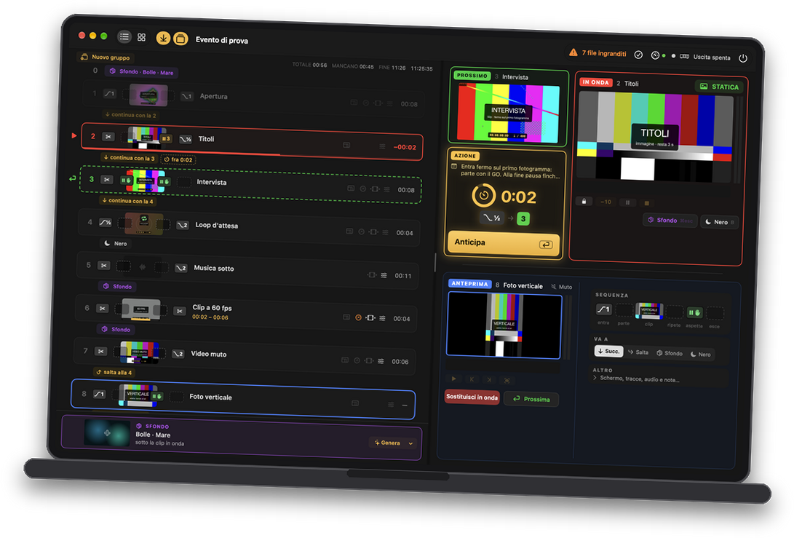
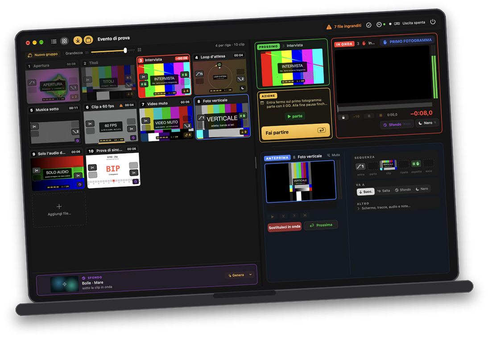

In sala si vede solo quello che vuoi tu.
cine è un player multimediale da usare nella regia degli eventi.
Una scaletta, un'uscita. Video, immagini e audio, lanciati quando servono.
Per ora solo Mac. [ quasi pronta ]


01perché esiste
Quando devi mandare in onda un video o una grafica, di solito le strade sono tre.
- Le presentazioni: non hai nessun controllo.
- Un player generico: non ti trovi mai con i menu, e prima o poi in sala compare il desktop.
- I software professionali: belli e completi, ma pensati per chi fa solo quello. Se non sei del mestiere, non ci capisci niente.
In mezzo c'è un vuoto, e ognuno lo riempie arrangiandosi con quello che conosce.
cine sta lì: semplice, ma fatta per non sbagliare.
02due cose, sempre
- In uscita c'è solo quello che vuoi. Niente desktop, niente menu, niente finestre. Se il cavo del secondo schermo salta, quando torna l'uscita si rimette da sola.
- Sai sempre cosa è in onda, e vedi sempre cosa sta per arrivare. Lo controlli prima di mandarlo, poi premi GO.
È qui che ho passato la maggior parte del tempo.
03due scene, una richiesta
alla sagra
Uno sfondo fisso e tre video da lanciare quando te lo chiedono. Non sei del mestiere e non vuoi diventarlo: ti serve che funzioni.
al convegno o allo spettacolo
Migliaia di persone in sala, una scaletta rigida, nessun margine di errore. Sei del mestiere, e ti serve solo una cosa: che funzioni.
Se funziona per uno, funziona anche per l'altro.
04provala
cine è quasi pronta e la prima versione gira in un gruppo ristretto. Se hai un evento su cui provarla, o vuoi solo vederla prima degli altri, scrivimi: support@savut.eu